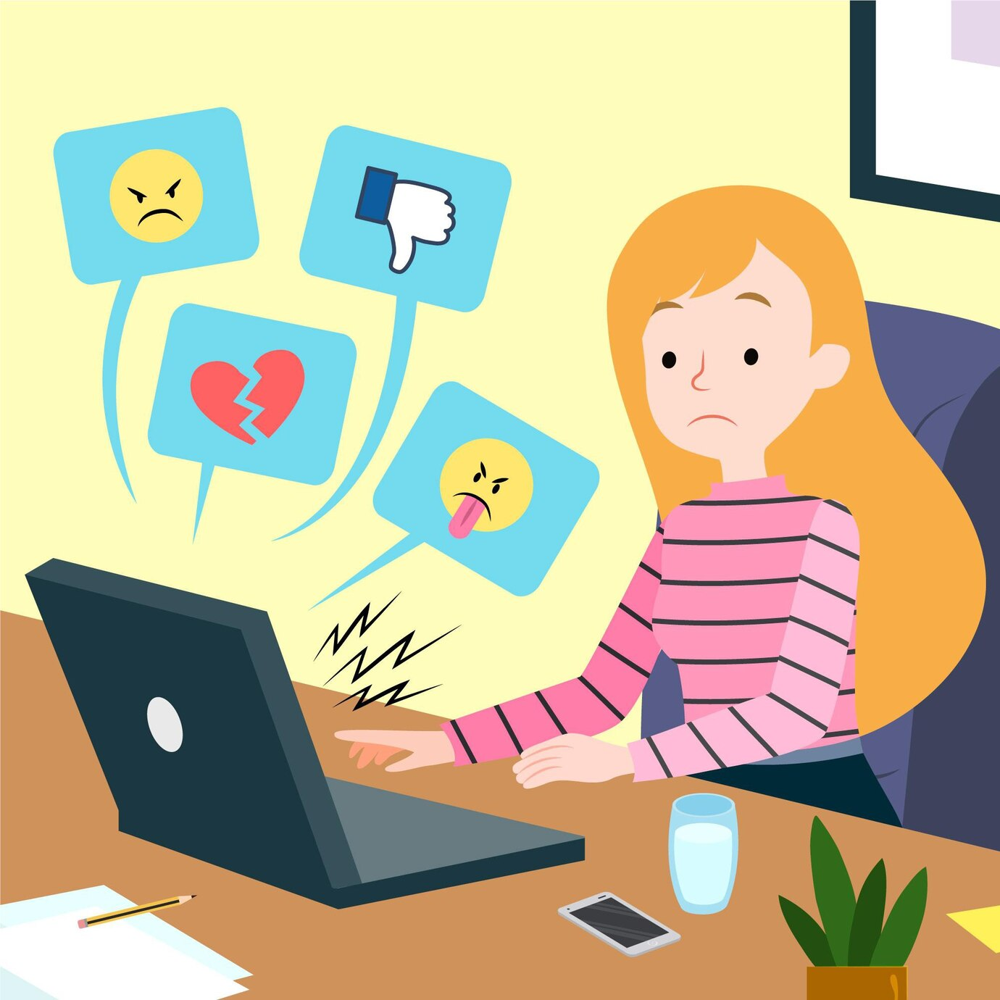

<!DOCTYPE html>
<html>
<head>
	<meta charset="utf-8">
	<meta name="viewport" content="width=device-width, initial-scale=1">
	<title></title>
	<link rel="stylesheet" type="text/css" href="style.css">
</head>
<body>

</body>
</html>

<div class="navbar"> 
			<p class="T">Table of content</p>
			<ul> 
				<li> <a href="index.html"> What is cyberbullying</a></li>
				<li><a href="consequence.html"> what is the effect of cyberbullying?</a></li>
				<li><a href= "prevention.html"> How do we deal with cyberbullying?</a></li>
			</ul>
		</div>

<div class="secondbox">
<h1> How do we deal with cyberbullying? </h1> 

<p class="p">  Being on the receiving end of cyberbullying is hard to cope with. It can feel like you have nowhere to turn and no escape. However, some things can be done to help overcome cyberbullying experiences. Responding will only make the situation worse and provoking a reaction from you is exactly what the cyberbully wants, so don't give them the satisfaction. </p>

<p>It's also very important that you don't seek revenge on a cyberbully by becoming a cyberbully yourself. Again, it will only make the problem worse and could result in serious legal consequences for you. If you wouldn't say it in person, don't say it online.</p>

<h3>Instead, respond to cyberbullying by:</h3>

<ul><li>Saving the evidence of the cyberbullying. Keep abusive text messages or a screenshot of a webpage, for example, and then report them to a trusted adult, such as a family member, teacher, or school counselor. If you don't report incidents, the cyberbully will often become more aggressive.</li>

<li>Getting help. Talk to a parent, teacher, counselor, or other trusted adult. Seeing a counselor does not mean there is something wrong with you.</li>

<li>Reporting threats of harm and inappropriate sexual messages to the police. In many cases, the cyberbully's actions can be prosecuted by law.</li>

<li>Being relentless. Cyberbullying is rarely limited to one or two incidents. It's far more likely to be a sustained attack on you over a period of time. So, like the cyberbully, you may have to be relentless and keep reporting each and every bullying incident until it stops. There is no reason for you to ever put up with cyberbullying.</li>

<li>Preventing communication from the cyberbully. Block their email address and cell phone number, unfriend or unfollow them, and delete them from your social media contacts. Report their activities to their internet service provider (ISP) or to any social media or other web sites they use to target you. The cyberbully’s actions may constitute a violation of the website’s terms of service or, depending on the laws in your area, may even warrant criminal charges.</li>
</ul>
</p>
 </p>

 <div class="box2">
		<h4> Speak to a Licensed Therapist</h4>

		<p> BetterHelp is an online therapy service that matches you to licensed, accredited therapists who can help with depression, anxiety, relationships, and more. Take the assessment and get matched with a therapist in as little as 48 hours.</p>
		<div>
		<a href="https://www.betterhelp.com/get-started/?go=true&transaction_id=102ebb6337f1ae6df396eddd50a433&utm_source=affiliate&utm_campaign=2729&utm_medium=Mac+OS+X&utm_content=&utm_term=&not_found=1&gor=start"> Take an assessment </a>
	</div>
</div>

<h1>Advice for Preteens and Teenagers</h1>

<P>The best thing you can do if you’re being cyberbullied is tell an adult you trust. It may be challenging to start the conversation because you may feel ashamed or embarrassed. However, if it is not addressed, it can get worse.

Other ways you can cope with cyberbullying include:

<ul><li>Walk away: Walking away online involves ignoring the bullies, stepping back from your computer or phone, and finding something you enjoy doing to distract yourself from the bullying.</li>
<li>Don’t retaliate: You may want to defend yourself at the time. But engaging with the bullies can make matters worse.</li>
<li>Keep evidence: Save all copies of the cyberbullying, whether it be posts, texts, or emails, and keep them if the bullying escalates and you need to report them.</li>
<li>Report: Social media sites take harassment seriously, and reporting them to site administrators may block the bully from using the site.</li>
<li>Block: You can block your bully from contacting you on social media platforms and through text messages.</li></ul>

<p>In some cases, therapy may be a good option to help cope with the aftermath of cyberbullying.

How to Protect Yourself From Online Harassment </p></P>

<h1>Advice for Parents</h1>

<p>As a parent, watching your child experience cyberbullying can be difficult. To help in the right ways, you can:</p>

<p><strong>Offer support and comfort:</strong> Listening to your child explain what's happening can be helpful. If you've experienced bullying as a child, sharing that experience may provide some perspective on how it can be overcome and that the feelings don't last forever.
Make sure they know they are not at fault: Whatever the bully uses to target your child can make them feel like something is wrong with them. Offer praise to your child for speaking up and reassure them that it's not their fault.</p>

<p> <strong> Contact the school:</strong> Schools have policies to protect children from bullying, but to help, you have to inform school officials.
Keep records: Ask your child for all the records of the bullying and keep a copy for yourself. This evidence will be helpful to have if the bullying escalates and further action needs to be taken.</p>
<p> <strong> Try to get them help:</strong> In many cases, cyberbullying can lead to mental stress and sometimes mental health disorders. Getting your child a therapist gives them a safe place to work through their experience.</p>

<h1>In the Workplace </h1>
<p>Although cyberbullying more often affects children and adolescents, it can also happen to adults in the workplace. If you are dealing with cyberbullying at your workplace, you can:

<ul><li>Let your bully know how what they said affected you and that you expect it to stop.</li>
<li>Keep copies of any harassment that goes on in the workplace.</li>
<li>Report your cyberbully to your human resources (HR) department.</li>
<li>Report your cyberbully to law enforcement if you are being threatened.</li>
<li>Close off all personal communication pathways with your cyberbully.</li>
<li>Maintain a professional attitude at work regardless of what is being said or done.</li>
<li>Seek out support through friends, family, or professional help. </li> </ul></p>


<div class="box3">

<h2> Find support from those who don't cyberbully</h2>

<p><li>Having trusted people you can turn to for support and reassurance can help you cope with even the most spiteful and damaging experiences of cyberbullying. Reach out to connect with family and real friends or explore ways of making new friends. There are plenty of people who love and appreciate you for who you are.</li></p>

<p><li>Share your feelings about cyberbullying. Even if the person you talk to can’t provide answers, the simple act of opening up about how you feel to someone who cares about you can make a real difference to your mood and self-esteem. Try talking to a parent, counselor, coach, religious leader, or trusted friend.</li></p>

<p><li>Spend time doing things you enjoy. When you spend time pursuing hobbies and interests that bring you joy, cyberbullying can have less significance in your life. Join a sports team, rekindle an old hobby, or hang out with friends who don't participate in bullying.</li></p>

<p> <strong> Find others who share your same values and interests.</strong> Many people are cyberbullied for not fitting in with the mainstream. Whether it’s your race, sexual orientation, beliefs, or gender that makes you a target, it’s important to remember that you’re not alone. There are lots of other people who’ve been through what you’re dealing with now, share your values, and will appreciate your individualism. Look for Meetup groups with people who share your interests, join a book group, volunteer for a cause that's important to you, or enroll in a team, youth group, or religious organization where you’ll find like-minded people.</p>
</div>

<div class="box4">
<h2>View cyberbullying from a different perspective</h2>

<p>You can help to ease the pain of cyberbullying by viewing the problem from a different perspective. The cyberbully is a jealous, frustrated person, often trying to escape their own problems. Their goal is to have control over your feelings so that they feel tough and powerful and you feel as unhappy as they do. Don't give them the satisfaction.</p>

<p><strong>Don’t blame yourself.</strong> No matter what a cyberbully does or says about you, it’s important to remember that it’s not your fault. Never feel guilty or be ashamed of who you are or what you feel. The cyberbully is the person with the problem, not you.</p>

<p><strong> Don't beat yourself up.</strong> Don't make a cyberbullying incident worse by reading the message over and over and punishing yourself further. Life moves so fast online that in a few days or weeks other people will likely have forgotten the incident. Instead, delete any hurtful or abusive messages and focus on the positive, instead. There are many wonderful things about you, so be proud of who you are.</p>

<p><strong>Manage your stress.</strong> Experiencing cyberbullying can leave you feeling jittery, nervous, and overwhelmed. But there are healthy ways to manage stress and build your resilience to the damaging effects of cyberbullying. Exercise, meditation, muscle relaxation, breathing exercises, and positive self-talk are all greats ways to relax, burn off frustration, and build mental fortitude against future negative experiences.</p>
</div>
</div>